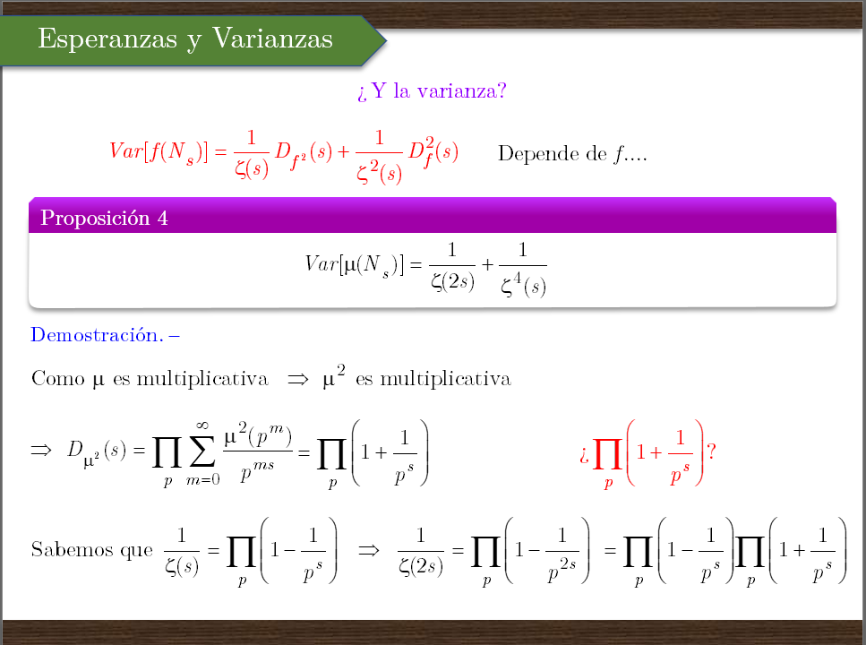

Expository Papers & Projects
Short papers and slides prepared for seminars or final course projects. Unlike research papers, these focus on the pedagogical exposition of specific topics, such as the basics of Number Theory or introductions to Analytic Number Theory.
